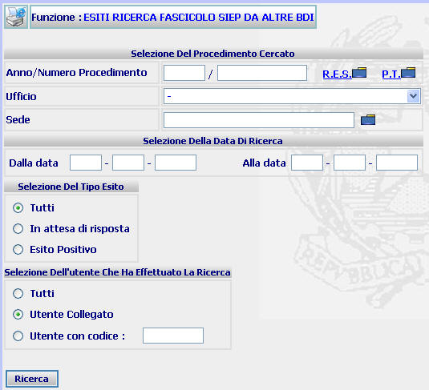
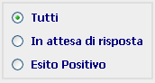
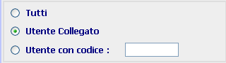
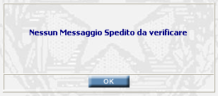

ESITI RICERCA FASCICOLO SIEP DA ALTRE BDI: La funzione consente di inserire gli estremi delle ricerche di fascicoli Siep effettuate su altre BDI al fine di verificare l'esito delle stesse
LA MASCHERA VIDEO
La funzione viene realizzata attraverso la maschera seguente in cui viene richiesto di compilare i campi ed i radio button presenti nelle quattro sezioni di cui è composta la maschera stessa:
| Selezione del procedimento cercato | |
| Selezione della data di ricerca | |
| Selezione del tipo esito | |
| Selezione dell'utente che ha effettuato la ricerca |

COME FARE PER ...
| per indicare i dati richiesti nella sezione "Selezione del procedimento cercato" si rimanda a quanto detto con riferimento alla funzione Ricerca fascicolo Siep altre BDI |
|
per indicare il lasso temporale al quale limitare la ricerca occorre: |
indicare la data di inizio e fine del periodo di riferimento
confermare i dati inseriti nella maschera agendo sul bottone
. Se esiste uno o più procedimenti rispondenti agli estremi atto indicati, allora viene visualizzata la maschera di elenco esiti ricerca fascicolo Siep altre bdi
|
per effettuare una ricerca relativa a tutti i tipi di esito della trasmissione, ovvero limitata solo a quelli in attesa di risposta o a quelli con esito positivo, occorre: |
selezionare nella sezione “Selezione del tipo esito" una delle voci indicate

confermare i dati inseriti nella maschera agendo sul bottone
|
per effettuare una ricerca relativa alle trasmissioni effettuate da tutti gli utenti, ovvero limitata a quelle effettuate dall'utente collegato o ad altro utente dell'ufficio, occorre: |
selezionare nella sezione “Selezione dell'utente che ha effettuato la trasmissione" una delle voci indicate

confermare i dati inseriti nella maschera agendo sul bottone
CAMPI
I dati attraverso i quali è possibile effettuare la ricerca sono i seguenti:
| Anno/Numero Procedimento | Campo (obbligatorio) nel quale va inserito l'ano ed il numero del procedimento Siep che si vuole ricercare. |
| Ufficio | il sistema propone l'Ufficio Procura della Repubblica. E' possibile selezionare altra voce dalla tendina. |
| Sede | inserire il comune interessato, oppure
selezionarlo tramite la lista predefinita
|
| Data iniziale - Data finale | Campo (di compilazione facoltativa) attraverso il quale si può inserire l'intervallo temporale al quale si vuole limitare la ricerca. |
| Utente con codice | Campo nel quale può essere inserito il codice dell'utente che ha effettuato le trasmissioni e relativamente al quale si vuole limitare la ricerca |
PULSANTI
E' presente il pulsante
 di stampa del contesto (videata)
di stampa del contesto (videata)
BOTTONI
Oltre ai comandi funzionali relativi al menù verticale sono presenti i seguenti comandi:
|
COMANDI |
DESCRIZIONE |
|
|
A fronte di tale comando, il sistema dopo aver verificato la validità dei dati specificati, presenta la maschera contenente l'elenco esiti ricerca fascicolo Siep altre bdi |
CONTROLLI
A fronte della pressione
del bottone
 , il
sistema verifica che:
, il
sistema verifica che:
tutti i campi a testo libero e quelli selezionabili da una tendina siano stati compilati correttamente
Esista uno o più procedimenti rispondenti ai canali di ricerca selezionati.
|
Se il sistema non troverà alcun atto trasmesso da verificare verrà visualizzato il seguente messaggio |
